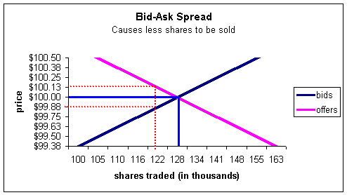
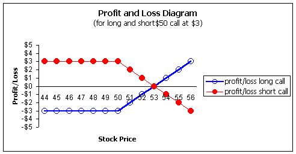

Many times I am asked if options are good for the market. After all, there is no new equity created as when new shares of stock are issued. What seems to be happening is that we are allowing a legalized gambling arena. At least, this is what the popular financial press would have us believe.
Further, we saw Baring's Bank, a 233-year old institution that helped finance the Napoleonic Wars, brought down single-handedly by an options trader. Certainly options cannot be good for anybody, right?
Before you take that view, let me show you why options were created and why they are actually good for the market. Options were created out of economic necessity, and are a logical extension of a well-developed financial market.
To help you understand, assume that there are no options and only stocks. Say you want to buy shares of ABC stock, trading for $100, and you're a long-term investor -- none of this short-term speculative stuff for you! When you decide to purchase shares for your long-term hold, what's better for you, one seller or two? Obviously, two sellers are better, as they will compete for your business and help to lower your purchase price. Likewise, when you sell your stock, would you prefer one buyer or two? Again, you should prefer two, as they will compete for your business and help to raise your selling price.
In other words, the more market participants you have, the better off you are whether buying or selling. Another way to say this is that the bid-ask spreads will be narrowed, causing more stock to transact -- and more wealth to be created. The spreads will narrow because the buyers will compete by raising the bid price (giving incentive for sellers to enter the market), and the sellers will compete by lowering the asking price (giving incentive for buyers to enter the market). The financial markets always benefit from narrow spreads.
Notice in the following diagram how the bid-ask spreads (red-dotted line) cause less shares to be sold (122,000 instead of 128,000) when compared to no spread (solid blue line).
Now, back to the buying of your stock. At this time there is only one seller, who also is a long-term player and has held this stock for ten years. Notice the nice, neat, clean market we have here with no speculators. However, with only one seller, this is certainly not a good situation for you.
Now let's meet Sam Speculator. Sam likes to speculate on market direction. He's willing to take big risks and gamble for big profits. Long-term investing for him is measured in hours. He just happens to think ABC stock will fall a few points. He would short the shares (which would be good for you since you'd have another seller), but he's very afraid to because of the recent volatility in ABC. He doesn't want to take the risk of the stock moving higher. So he sits on the sideline, leaving you with just the one seller.
Now let's enter the options market. Call options give market participants a way to purchase stock, while put options provide a way to sell stock for a fraction of the cost of the stock. In addition, the owner of a call or put option has risk that is limited to the amount paid for the option. This idea gets Sam's attention. He puts in a bid to buy 10 of the $100 strike puts for a price of $5 1/2.
The market maker sees this order and wants to fill it, as this is how he makes money. He will create a synthetic put by selling stock and buying a call. In other words, the market maker must "manufacture" the long put option that Sam wants. But where will the market maker be able to buy the call? He doesn't know either, so he puts in a bid to buy one for, say, $5-1/4.
Another investor, Conservative Connie, also hates the idea of speculation in the markets. However, she will gladly sell someone a call option against stock in her IRA account, as it will give her income without the need for selling her shares. She happens to own ABC stock, so she sells the market maker the call and pockets the $5-1/4 per share. She's willing to assume the downside risk on ABC (if she wasn't, she wouldn't own it). Connie doesn't think the stock will fall; Sam thinks it will. Together, they bring more stock to the market.
Notice what's happened. The market maker shorts stock, which is really what Sam wanted to do but was afraid of the risk. The market maker then protected himself with the purchase of a call and sold that package (a synthetic put) as a long put to Sam.
You wanted to buy shares of ABC but now have two sellers instead of one. The market maker, in essence, has partitioned his risk between two other players. Together, Sam and Connie hold the synthetic short position (Sam is long the put and Connie is short the call). Because those two participants were willing to accept the associated risks, the market maker was able to short the stock, thus lowering the asking price of the stock you're interested in buying!
Options, in this example, gave us an arena in which to meet speculators. It doesn't matter where they live or what they want to use the option for. In this example, Connie was willing to assume the downside risk of the stock if she could get paid for it. Sam was willing to pay for that. Unfortunately, Sam doesn't know Connie. But, through the options market, Sam and Connie are matched.
Ultimately, the options markets bring in more participants, making the spreads narrower for all. So speculators are actually a necessary part of financial markets, and although it's sometimes difficult to see, they make the markets better and more efficient.
If you're still not convinced, think about the bond market. Bonds are almost always associated with conservative investing. If you buy a bond, you may see yourself as a responsible, conservative investor. In fact, you may even hate the idea of borrowing! No credit cards or debts of any kind for you. Now for the hidden truth. Who do you think is on the other side of that bond trade? A borrower -- a speculator -- hoping to make a profit by earning more with the borrowed funds than they will owe in interest. If you love the idea of loaning money, be glad there are speculators in the world. No speculators, no bond market.
Speculators are an essential part of any well-functioning market. While it is a tragedy that Nick Leeson single-handedly brought down Barings Bank with options, that is the fault of the user and not of the options market.
Keep in mind there were also investors on the other side of those trades, and for every option trade there is a winner for every loser, as shown in the following chart:
Notice how the profit and loss diagrams are mirror images for the long and short positions. Money merely changes hands from one person to the other. In this way, options can be viewed as a "bet" between two people, but that should not trick you into believing that's why they were created.
Somewhere in the world, a conservative mutual fund manager may have desired puts as a hedge for his mutual fund, and bought the puts that Nick was selling. Options are about transferring risk. Nick Leeson was selling straddles on a Japanese index speculating on a quiet market; he was accepting the risk the mutual fund manager wanted to hedge.
Because of this, that mutual fund may have had a great year and provided for a new home for someone or protected their IRA account. The fund may have sent someone to college who, otherwise, never would have had a chance. But we will never know the name of this person as we know Nick Leeson's. We will never know, because that is not horrific news, so it just vanishes into the background. It's easy to overlook what you cannot see. But they are there every time another loses on an option trade.
Options are good for the market. They create narrower spreads and provide excellent hedges for conservative investors. They are also excellent speculating tools for those who use them responsibly.